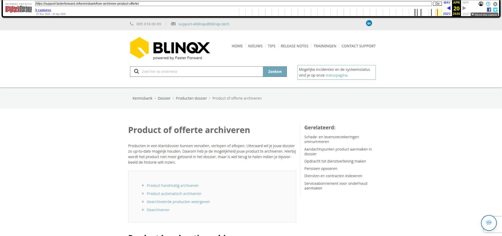

Product of offerte archiveren

Tekstinhoud
Product of offerte archiveren
Producten in een klantdossier kunnen vervallen, verlopen of aflopen. Uiteraard wil je jouw dossier zo up-to-date mogelijk houden. Daarom heb je de mogelijkheid jouw product te archiveren. Hierbij wordt het product niet meer getoond in het dossier, maar is wel terug te halen indien je bijvoorbeeld de historie wilt inzien.
Product handmatig archiveren
Product automatisch archiveren
Gearchiveerde producten weergeven
Dearchiveren
Product handmatig archiveren
Om het product te archiveren, klik je op de verhuisdoos met groen driehoekje, te vinden bovenin de offerte. Let op: wanneer je het product archiveert dan worden automatisch de stukkenlijst gekoppeld aan het product en de workflows onder het product verwijderd.
Product automatisch archiveren
Beëindigde producten, waarvan de productstatus hoort bij de offertesysteemstatus 'Beëindigd' (rood icoon), worden vier weken na het beëindigen automatisch gearchiveerd. In het product wordt een melding getoond wanneer het product automatisch wordt gearchiveerd.
Wil je niet dat het product automatisch wordt gearchiveerd? Dan kan je vanuit de melding het automatisch archiveren voor dit product niet uit laten voeren. De melding zal dan verdwijnen. Als je het product een andere status geeft die niet gekoppeld is aan de offertesysteemstatus 'Beëindigd' dan zal het product ook niet automatisch gearchiveerd worden.
Let op: wanneer het product gearchiveerd wordt dan worden automatisch de stukkenlijst gekoppeld aan het product en de workflows onder het product verwijderd.
Gearchiveerde producten weergeven
Producten die gearchiveerd zijn, kunnen weer getoond worden door in de startpagina van het dossier te klikken op '(toon gearchiveerde producten)'.
Dearchiveren
Het is mogelijk om een product te dearchiveren. Hiervoor klik je eerst op '(toon gearchiveerde producten)'. Dan open je het gearchiveerde product.
In de offerte is nu op de plaats van het eerder genoemde verhuisdoos met groene driehoek, een verhuisdoos met een rode driehoek te vinden. Klik op dit icoontje om het product te dearchiveren.
Vervolgens dient de workflow opnieuw toegevoegd te worden via het tabblad workflow. Weet je niet welke workflow je moet toevoegen? Via het tabblad Communicatie – Registratie – systeemregistraties op toon zetten kan je zien welke workflows voor het laatst doorlopen zijn.
Het is mogelijk dat je deze rechten niet hebt. Neem dan contact op met jouw intern beheerder of met onze supportafdeling.
Laatste update: 15 oktober 2025
Was deze informatie nuttig?
Ja Nee